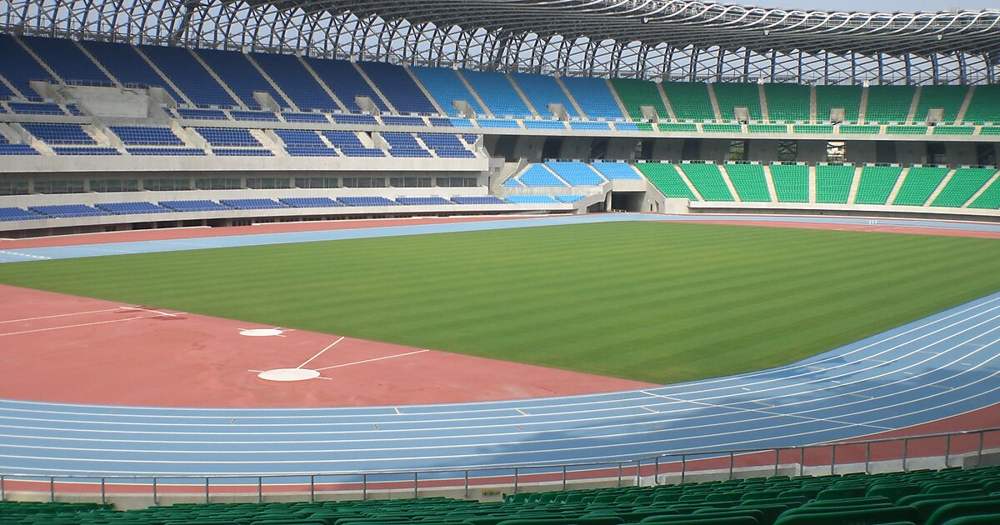
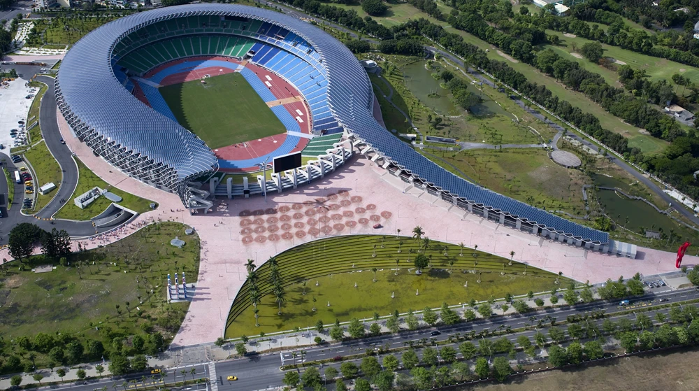

Stade national de Kaohsiung
Le stade national de Kaohsiung est un stade omnisports situé à Kaohsiung, à Taïwan. Il a été conçu par l’architecte japonais Toyō Ito et inauguré en 2009 pour accueillir les Jeux mondiaux de 2009. Il est surnommé le stade du Dragon en raison de sa forme en semi-spirale qui rappelle le squelette d’un dragon. Il peut accueillir jusqu’à 55 000 spectateurs et dispose d’un système d’énergie solaire qui lui permet de fonctionner sans apport extérieur d’électricité.
Le stade national de Kaohsiung est utilisé principalement pour les matchs de football, mais il peut aussi accueillir d’autres événements sportifs et culturels. Il a été le lieu des cérémonies d’ouverture et de clôture des Jeux mondiaux de 2009, ainsi que des épreuves de rugby à sept et d’ultimate. Il a également accueilli des concerts, des spectacles et des manifestations publiques. Le stade national de Kaohsiung est un symbole du développement sportif et culturel de Taïwan, ainsi qu’un exemple d’architecture innovante et écologique.